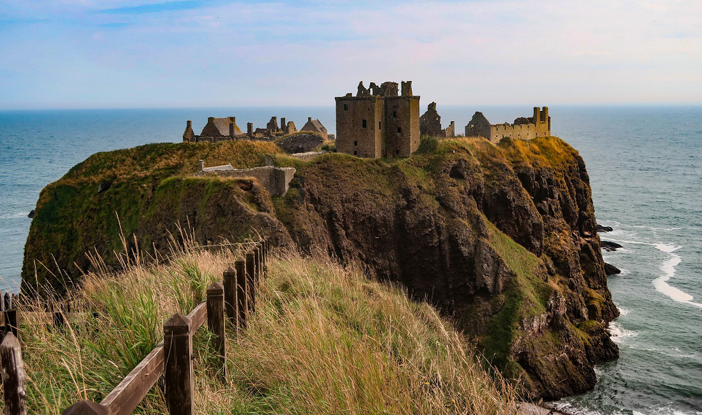
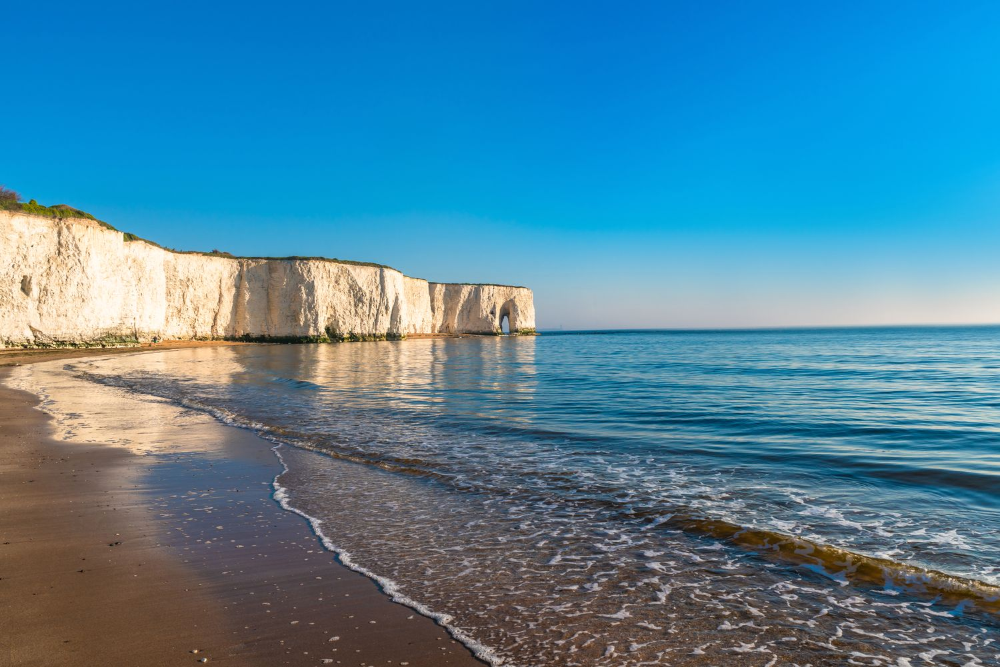
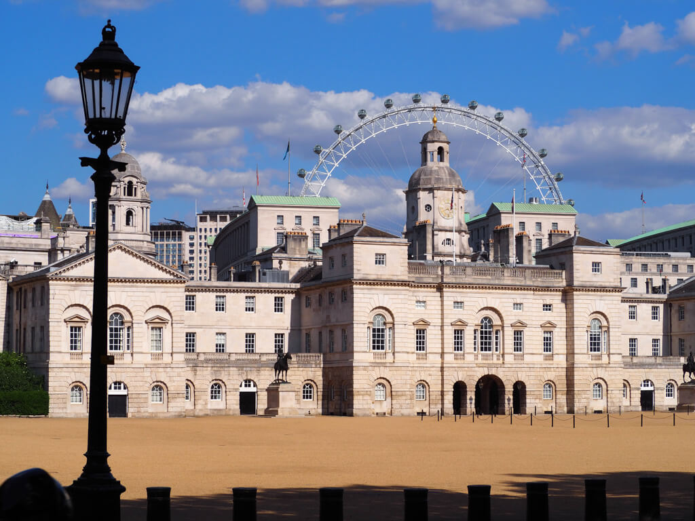
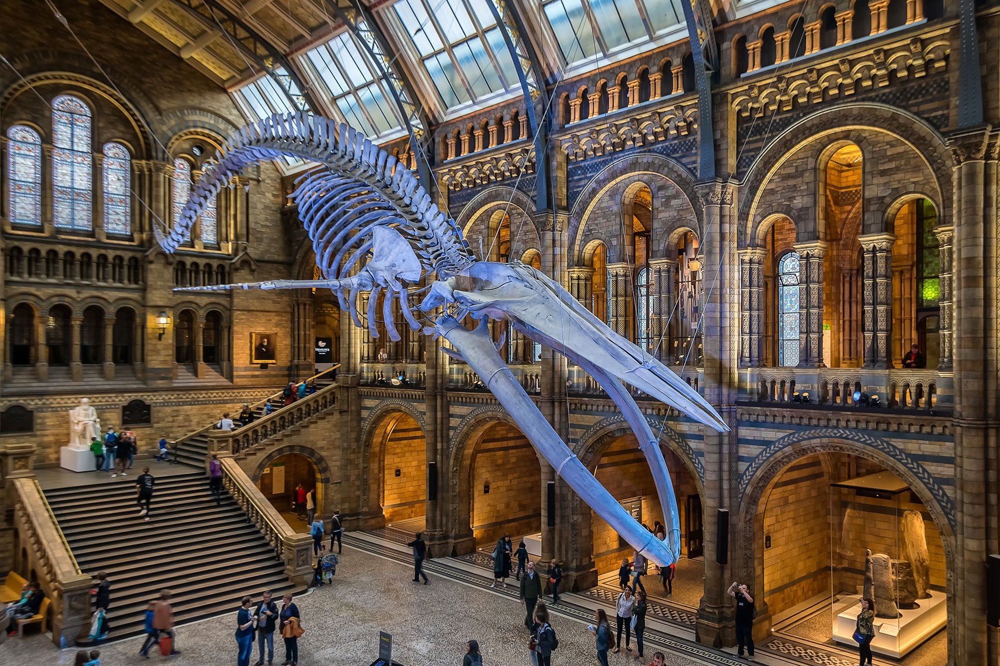
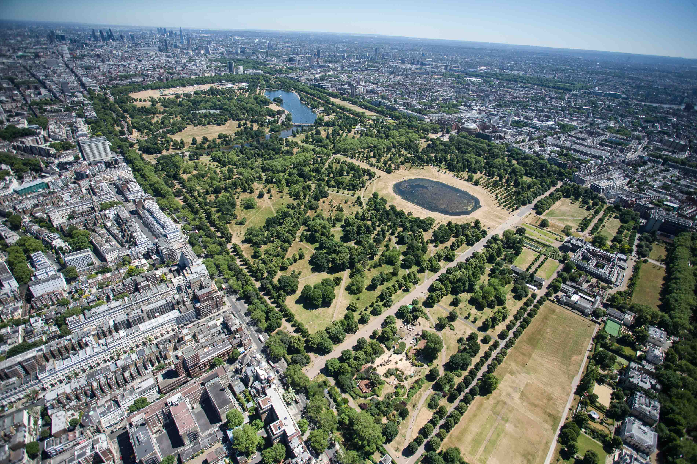

London Landmarks
Visit iconic attractions including royal palaces, historic buildings, and world-renowned museums in the UK’s capital city.
Explore some of the most visited and iconic destinations across the United Kingdom.
Visit iconic attractions including royal palaces, historic buildings, and world-renowned museums in the UK’s capital city.

Discover breathtaking castles set among Scotland’s rugged landscapes, rich with centuries of history and heritage.

Explore stunning coastlines, seaside towns, and dramatic cliff views across England, Wales, and Scotland.

Step back in time by visiting ancient ruins, Roman heritage locations, and UNESCO World Heritage sites.

Experience world-class museums and art galleries such as the Tate, celebrating creativity and culture.

Enjoy nature, hiking trails, and peaceful countryside scenery in the UK’s protected national parks.